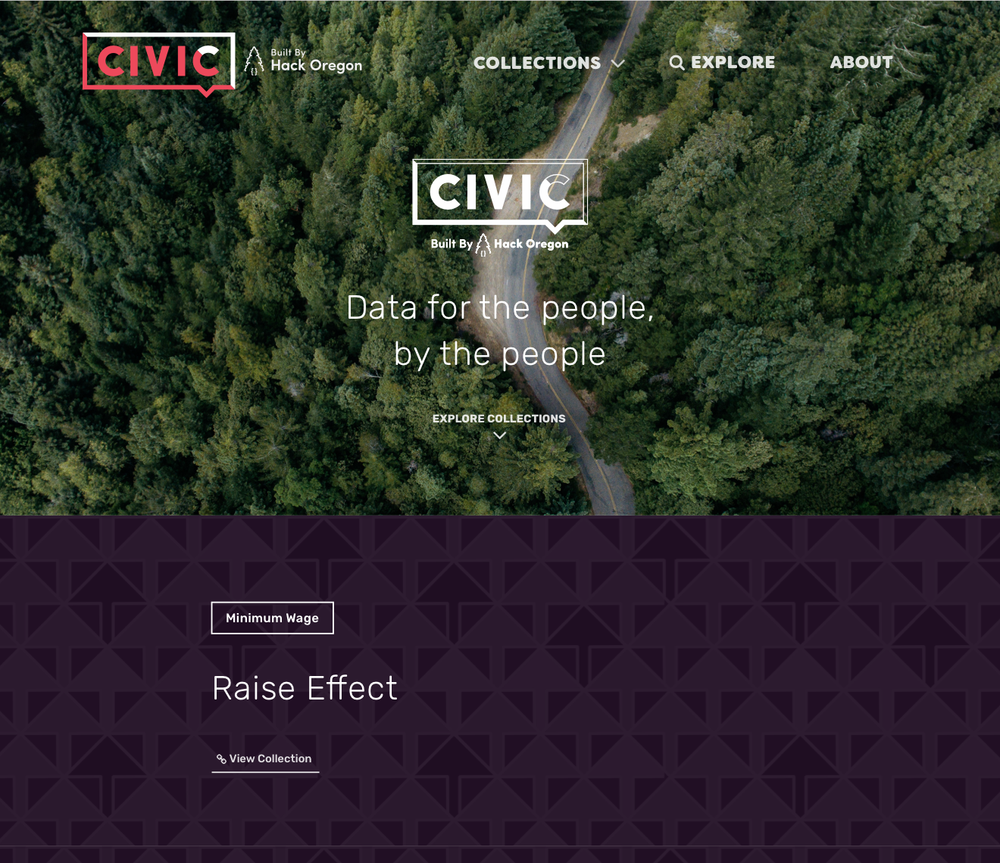
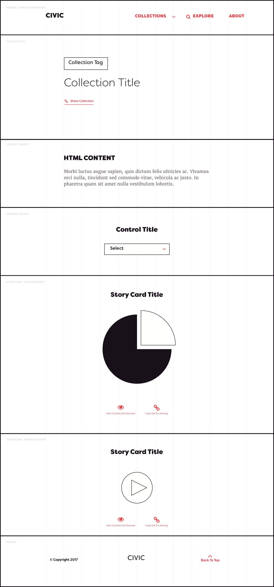
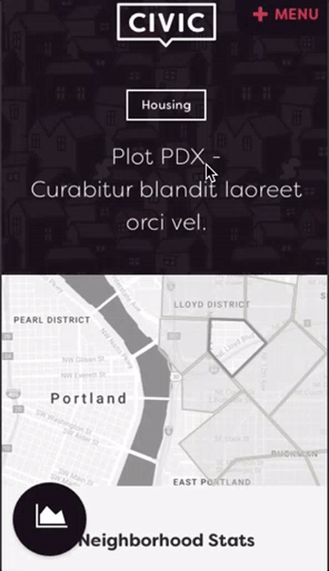
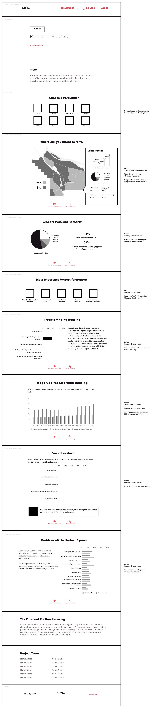
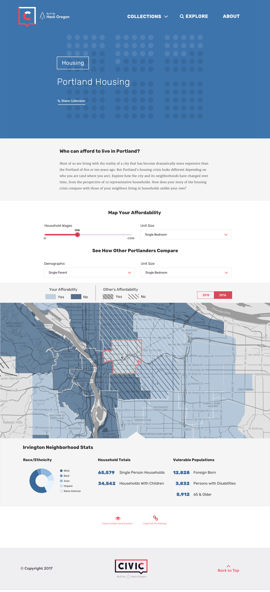

CIVIC Case Study 2017
I worked as a volunteer and design teacher for Hack Oregon for 2-2 1/2 years, working on a variety of data-based projects. The last project I worked on was the branding and product design for their platform CIVIC.

The Problem
Hack Oregon had been making custom sites for their previous volunteer projects and wanted to build a platform that could make the styles consistent, increase usability, easier to develop, and be a better way to view past projects and build from the knowledge already gathered. Teams paired with different Portland city bureaus would create collections of data insights for the first iterations.
Role and Team
The design of the platform began as a 6-week product design workshop, the requirements were gathered and the problem understood in the workshop, but the design wasn’t executed. After the workshop ended another volunteer designer and I picked up what had been made and worked as co-leads to get the product and branding defined over the course of the next month to two months.
I specialized in working on the architecture and how the different components would behave and the other designer focused on the final visual design. We also collaboratively created the logo.
I also worked as the lead designer for the Housing bureau data project during this time, although I came in near the tail end and mainly focused on finalizing their data insights into the UI.
Users and Audience
The audience for the project were the people of Portland and residence of Oregon mainly, giving them the ability to utilize the data that’s publicly available with the power to access it and understand it themselves. Teams would create and find insights or stories in this data to make it more accessible to the every day citizen.
The larger long term goal was to make this a platform that could support other cities across the U.S. to do similar things with their government data. This would mean that a consistent set of components was available for the teams to start from and eventually an admin to input and data into from the government side. We set these requirements aside in the design process as they were out of scope for the initial version, but kept them in mind trying to build the designs in a flexible way.
Design Process
Requirements Gathering / Understanding the Problem
The definition of the scope, the persona building, and general requirements gathering was done in the workshop as a group. We worked with the Executive Director of Hack Oregon for overall direction.
Wireframing / Branding
I worked with a small group of people to create a rough skeleton of the interface. Once the workshop was done a fellow volunteer designer and I picked up the materials and began work on wireframing and iterating on how custom pages might be modularized as well as starting to work on branding. We only had the idea that it would be called CIVIC to start.


Visual / Interactive Design
Once we had iterated and presented the wireframes to the Hack Oregon stakeholders and vetted with the technical team, we moved onto visual design and began trying out a few options for interactive design on mobile.
Final iterations were worked through, the timeline was getting closer so we decided to do a final run at creating a few things:
- Branding guidelines and the start of some best practices for designing data viz as a lot of the teams were lacking in designers or designers that had much knowledge on data design
- Documentation for the developers that would be focusing on the platform build out
You can see snippets of the final branding guide below or the entire pdf here.


Housing Project
I was also asked while working on this to help the housing team with their data insights, as they didn’t have a senior designer. This worked out to help us see where iterations would need to go to include more flexibility for teams.


Outcome
Hack Oregon works on project seasons which end with a large presentation, this puts a lot of pressure on the teams and a hard deadline. The end result could use polish and a large amount of the backend platform building still needed to get done, but the reception of the projects at the presentation was great.
Issues Faced
The end result was a promising start and we could see the benefit and vision of how the platform could work going forward, but the timeline was too squished (about 3 months of data grooming and dev time) along with all of the workers being volunteers totaling about 5-10 hours a week of work. So aside from the ambition, I think that a good foundation was made, this was also the first season working with the city bureaus and solidifying that relationship.